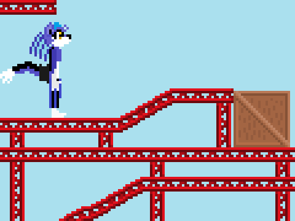
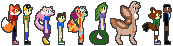

Download of Resume
-Coding in Java, C/C++/C#, Python, Javascript/CSS/SQL
-Complex World-building

-Character Design:

(Done in Paint/Paint.net)
-Story Creation:
Am currently working on several stories and have an Excel document to record any and all.
Here are a few examples:
"Super Kid: Dream Team": A story of intrigue, mystery, and adventure with a legendary hero thrown in.
"Legends of Ages": Stories of heroes, villains, and legendary items across time and space.
"Super Kid: Dimension Chaos": A story of heroes from other worlds and about their grand adventure to put their homes back to normal.
"Blazing Rails": A story of an engineer and one fateful day where his life would change forever.
"Super Kid Journeys": The legacy of a hero and his adventures.

Image by Melody Chan